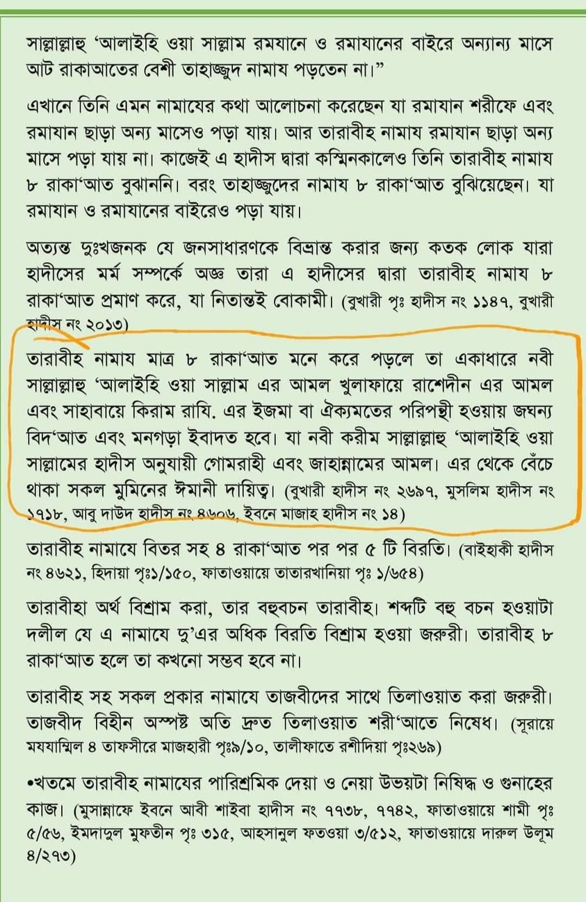

অতি শ্রদ্ধার সহিত জানতে চাই, সহিহ বুখারি, মুসলিম, আবু দাউদ বা ইবনু মাজা'র ঠিক কোথায়…
২১ মার্চ, ২০২৪
অতি শ্রদ্ধার সহিত জানতে চাই, সহিহ বুখারি, মুসলিম, আবু দাউদ বা ইবনু মাজা'র ঠিক কোথায় আছে যে, ৮ রাকাআত তারাবি পড়া বেদআত, ইজমার খেলাফ বা তা জাহান্নামের আমল? আমাকে জানিয়ে বাধিত করবেন।
[বই: আমালুস সুন্নাহ, লেখক, মুফতি মানসূরুল হক পৃ. ৭৮]
অতি শ্রদ্ধার সহিত জানতে চাই, সহিহ বুখারি, মুসলিম, আবু দাউদ বা ইবনু মাজা'র ঠিক কোথায় আছে যে, ৮ রাকাআত তারাবি পড়া বেদআত, ইজমার খেলাফ বা তা জাহান্নামের আমল? আমাকে জানিয়ে বাধিত করবেন।
[বই: আমালুস সুন্নাহ, লেখক, মুফতি মানসূরুল হক পৃ. ৭৮]
